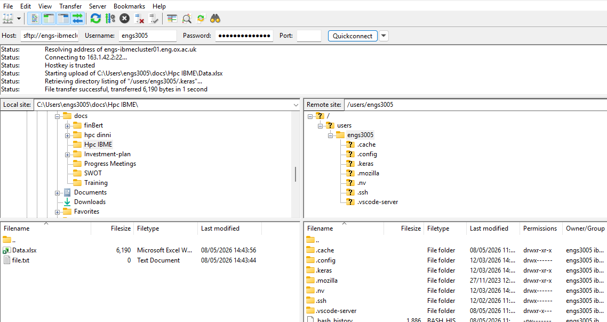

2. Transferring data to the cluster
Archiving file
The quickest way to transfer a large number of files is to archive them into a single file before moving them over the network. This drastically reduces the overhead of transferring individual files. In Linux and macOS, the Tape Archive utility—known as tar is used to combine multiple files and folders into a single archive file. tar is often paired with a compression tool such as gzip, which uses the .gz file extension. For example, to compress a directory named data (along with all of its internal subdirectories and files) into a single archive named compressed_data.tar.gz, you can use the following command:
Windows systems also support tar, and the command above is compatible with Windows machines. For HPC systems, it is recommended to use tar instead of zip (which is available on Windows). The tar command preserves file and directory permissions, unlike zip. Since HPC systems typically run Linux distributions, working with a native archive format makes file handling easier.
Compare the reduction in size with the du command.
code
The output shows the data directory has a size of 146M The compressed file has a size of 48MTransferring files
For Linux and macOS systems, the rsync command can be used to transfer files and directories to remote servers. For instance, to transfer the file compressed_data.tar.gz to user's home directory on the IBME cluster, the following command can be used:
code
-
compressed_data.tar.gzis the file to be transferred -
Replace the
<userid>placeholder with the username assigned for the IBME cluster -
engs-ibmecluster01.eng.ox.ac.ukis the host name of the IBME cluster -
Anything following the colon (
:) specifies the destination path where the file will be copied on the cluster (in this case,~/represents your home directory).
After running the above command, the IBME login node prompts the user for a password specific to the /data/<userid> directory.
For Windows users, it is highly recommended to install the Windows Subsystem for Linux (WSL) to use rsync. After successfully installing WSL, your local Windows drives are automatically mounted in the /mnt directory. From the WSL terminal, you can navigate directly to the folder containing your files or simply provide the exact path to the file in your rsync command.
code
Transferring files with FileZilla
FileZilla is a free file transfer software. It can be used to upload and download data from a remote server. To use the software, the FileZilla Client can be downloaded and installed on a local computer. Once installed, FileZilla is available from the Windows Search pane and can be launched. The image below shows the graphical user interface of the software.

The software has two file browser windows: one for the local computer on the left and one for the remote server on the right. Initially, the remote server file browser remains empty until a connection to the server is established.
To connect to the remote machine (in this case the IBME cluster), enter the following details in the Quickconnect bar at the top:
- Host: sftp://engs-ibmecluster01.eng.ox.ac.uk (the host is engs-ibmecluster01.eng.ox.ac.uk and the sftp is the protocol)
- Username:
<userid>(Username on the host machine) - Password: The password associated with the
<userid> - Port: This can be left blank
After entering the connection details, click Quickconnect. If the connection is successful, the remote server file browser will appear on the right. Navigate to the required location by selecting folders in the file browser or entering the directory path in the address bar. For the remote server, entering the directory path directly is often more convenient. Files can then be transferred by dragging and dropping them between the left and right panels.